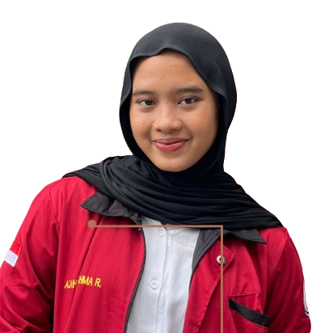
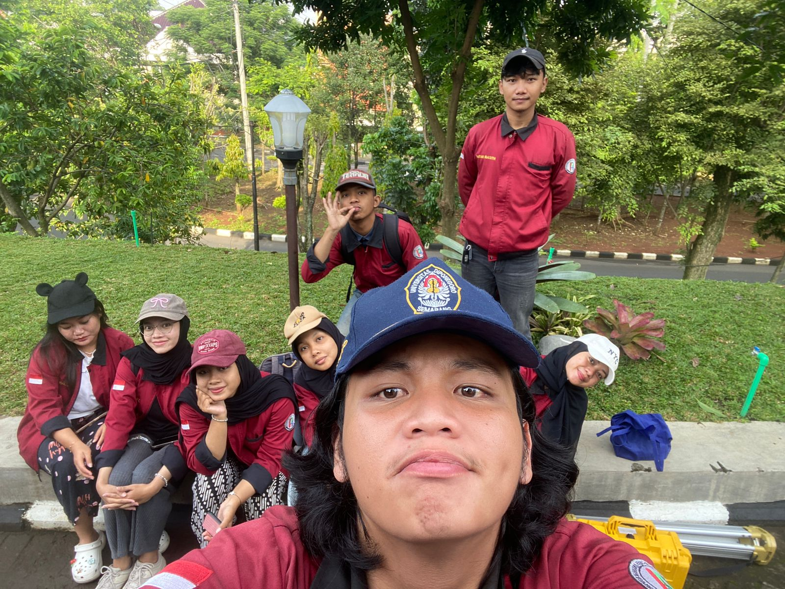
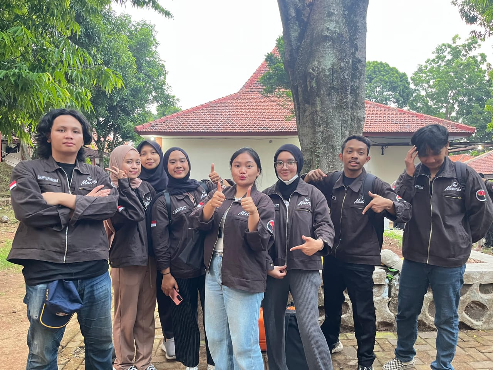
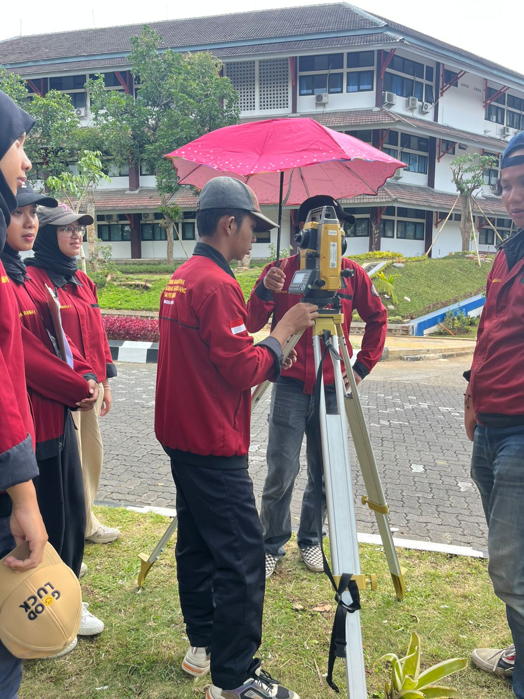
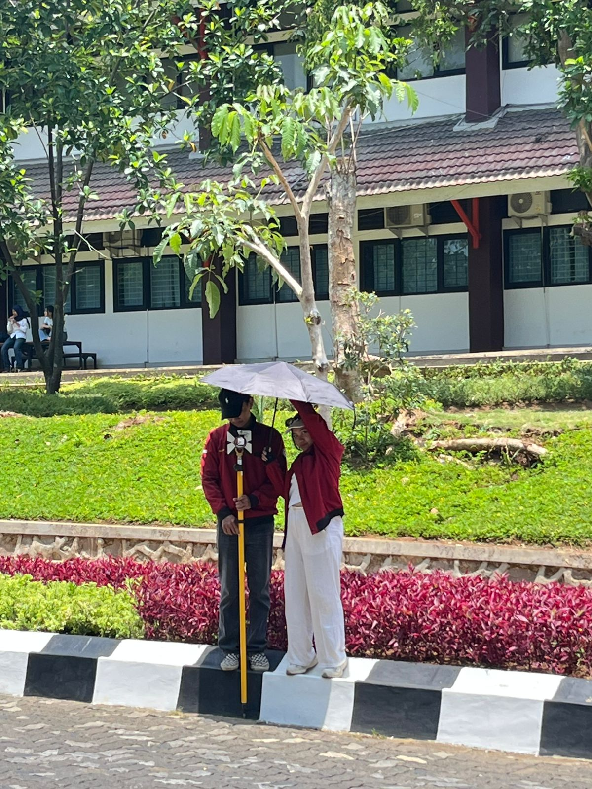
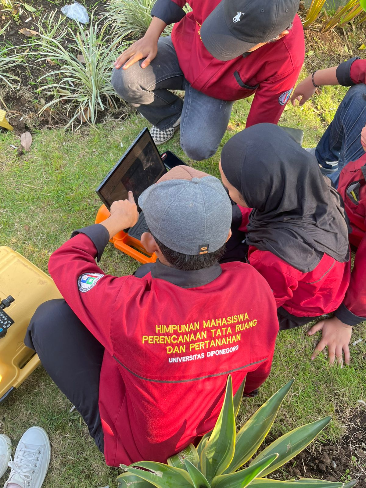
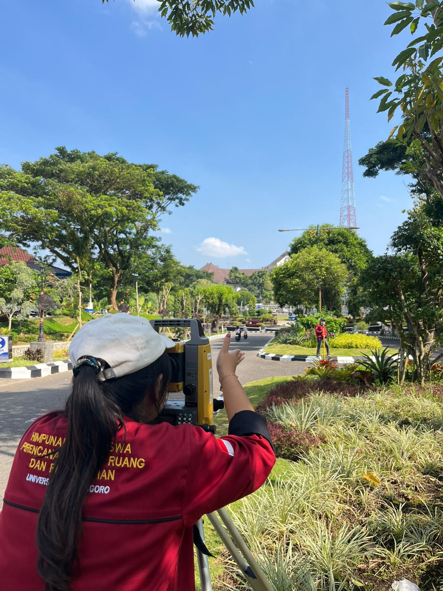

Sistem Informasi Pertanahan
Desa Munggung · Kecamatan Karangdowo
Memuat Waktu...
👤
Memuat...
⏏
Satu Data, Satu Peta, Munggung Tertata
Kecamatan Karangdowo · Sistem Informasi Pertanahan

Sistem Informasi Pertanahan · Kecamatan Karangdowo · Universitas Diponegoro





